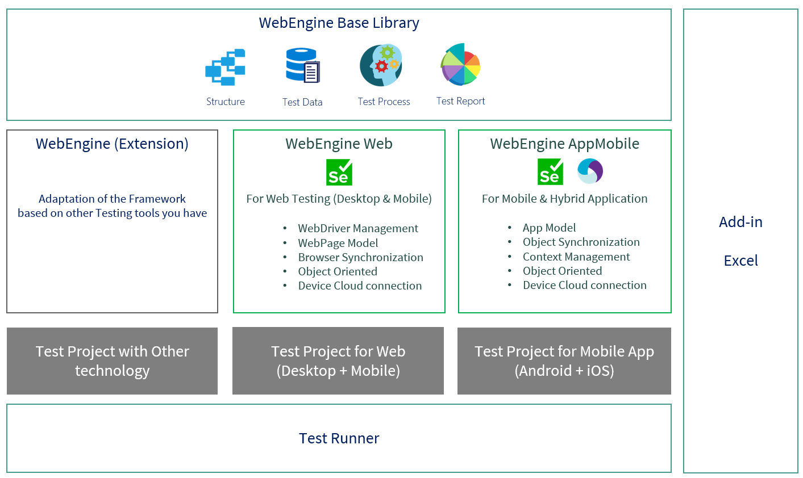

Introduction to WebEngine Framework
WebEngine is a Test Automation Framework (TAF) that makes it easy to build reliable, maintainable test automation solutions for Web, Mobile Web and Mobile App testing. The framework is built on top of Selenium and Appium, and extends them with standardized approaches, built-in best practices and ready-to-use tooling so your team can focus on test logic rather than framework plumbing.
Tests built with WebEngine can run locally, on a remote Selenium Grid, or be integrated into any Continuous Integration / Continuous Delivery pipeline.
Why WebEngine instead of plain Selenium?
Selenium and Appium are excellent low-level libraries, but using them alone means every team must solve the same infrastructure problems from scratch. WebEngine solves these problems once, for everyone:
| Problem with plain Selenium / Appium | WebEngine solution |
|---|---|
| Manual WebDriver download and version alignment | BrowserFactory detects browser version and fetches the right driver automatically |
StaleElementReferenceException / timing issues |
Every element action has a built-in synchronized retry loop |
| Fragile single-locator element identification | WebElementDescription supports multiple combined locators |
| Passwords in plain text in scripts or data files | SetSecure + Encrypter — cipher text stored, decrypted on the fly |
| Test data duplicated inside test scripts | Excel-based externalization, environment switching without code changes |
| No structure conventions — hard to onboard | Recommended project layout enforced by Copilot instructions |
| Selenium / Appium not accessible to AI tools | MCP server exposes live browser control to GitHub Copilot and other AI assistants |
For the full explanation of each practice, see Best Practices in WebEngine Framework.
Framework Components
WebEngine is composed of 7 components. Install only what you need.
WebEngine Base Library(AxaFrance.WebEngine): Core data structures — Test Suites, Test Cases, Test Steps, Test Data, Environment Variables and Test Reports. Required by all other components.WebEngine Web(AxaFrance.WebEngine.Web): Selenium WebDriver management, Web Element identification, Page Models and browser utilities for desktop and mobile browsers.WebEngine MobileApp(AxaFrance.WebEngine.MobileApp): Appium WebDriver management, App Element identification and device connection for native Android and iOS applications.WebEngine MCP(AxaFrance.WebEngine.Mcp): An MCP (Model Context Protocol) server that exposes live Selenium and Appium capabilities to AI assistants such as GitHub Copilot, enabling AI-driven browser and mobile automation.Excel Add-in: Manage, export and launch test execution directly from Excel spreadsheets when using the Data-Driven approach.Test Runner(WebRunner): The command-line executable to run automated tests with a given configuration. Produces a structured XML report consumable by Report Viewer.Report Viewer: A graphical viewer for test reports — synthetic overview and detailed step-level trace in one tool.

Note
Current development status and supported actions per component are listed in Development Status.
Installation
Choose the packages matching your scenario. All packages are available on NuGet (.NET) and Maven (Java).
| Scenario | Required packages |
|---|---|
| Web testing — any approach | AxaFrance.WebEngine + AxaFrance.WebEngine.Web |
| Mobile browser testing | above + Appium server or Selenium Grid |
| Native Android / iOS app testing | AxaFrance.WebEngine + AxaFrance.WebEngine.MobileApp |
| Keyword-Driven or Data-Driven execution | above + AxaFrance.WebEngine.Runner (WebRunner) |
| Local report viewing | + AxaFrance.WebEngine.ReportViewer |
| AI-assisted automation via MCP | + AxaFrance.WebEngine.Mcp |
Example: Keyword-Driven approach for a Web Application
AxaFrance.WebEngine
AxaFrance.WebEngine.Web
AxaFrance.WebEngine.Runner ← for test execution via WebRunner
Example: Unit Tests for an iOS Native App
AxaFrance.WebEngine
AxaFrance.WebEngine.MobileApp
The test runner is provided by the unit test framework you choose (NUnit, MSTest, XUnit, JUnit).
Example: Gherkin / BDD for a Web Application
AxaFrance.WebEngine
AxaFrance.WebEngine.Web
The runner is provided by your Gherkin framework (SpecFlow, Cucumber).
Extension
If you need to automate an application that Selenium cannot reach, you can build an extension on top of WebEngine Base Library.
Your extension inherits the same test structure, data management and reporting while using a different underlying driver.
For example, some teams at AXA use MicroFocus UFT Developer alongside WebEngine.
Going Further
| Topic | Where |
|---|---|
| Built-in best practices explained | Best Practices |
| Supported browsers, platforms and actions | Development Status |
| Configuration file reference | Test Configuration (appsettings.json) |
| GitHub Copilot integration | Using GitHub Copilot with WebEngine |
| CI/CD integration | Tutorials → CI/CD |